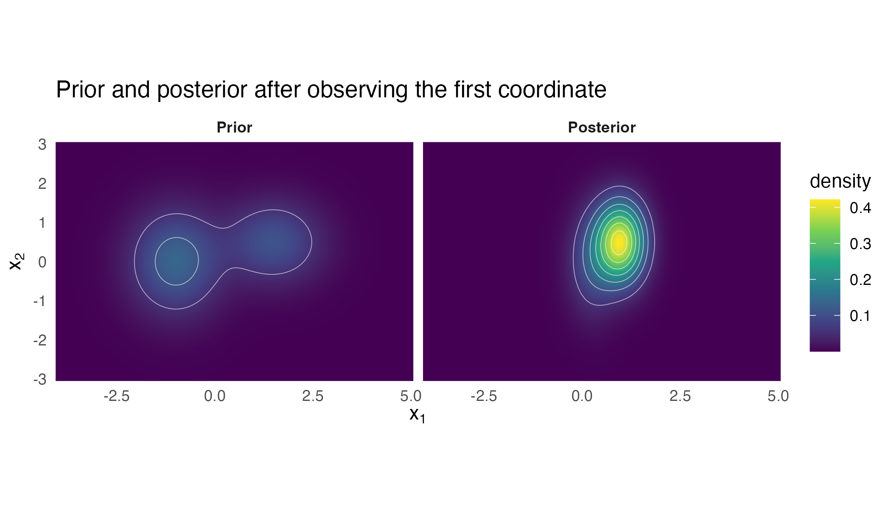
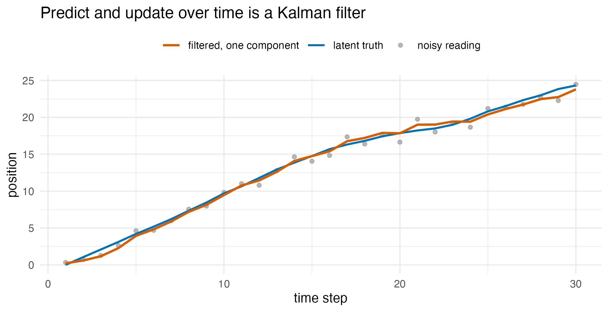
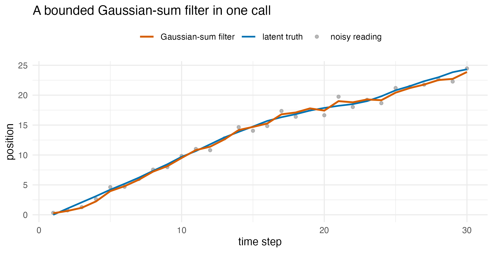
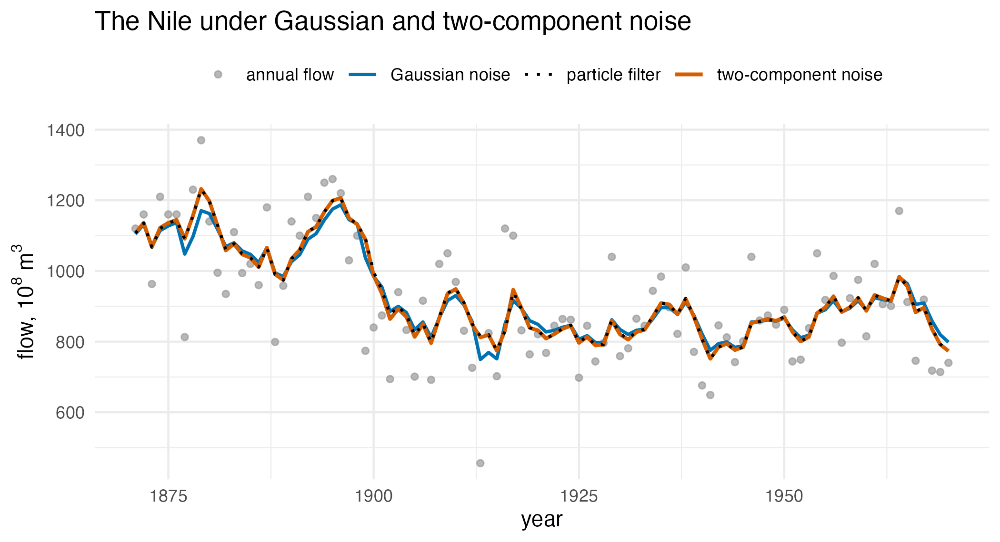

The closed-form operator calculus on a mixture
Source:vignettes/articles/extended/operator_calculus.Rmd
operator_calculus.Rmd
has_ggplot2 <- requireNamespace("ggplot2", quietly = TRUE)The problem
A modeller has a fitted Gaussian-mixture proxy and a pipeline waiting behind it: push the latent state through a sensor, fold in a measurement, aggregate to a coarser grid, condition on what was observed, run the whole thing forward in time. The question is not whether any of that is possible, but where the exactness stops: I have a fitted mixture, so which of the things I want to do with it next stay exact, and which quietly stop being exact? This vignette draws that line, and checks each claimed exactness against an independent hand computation rather than asserting it.
Package capabilities
Four operator families act on a mixture and return a mixture, so they
compose without ever leaving closed form. gmm_affine()
pushes a mixture through a linear map with additive Gaussian noise,
;
gmm_aggregate() is the same operator specialised to a
coarsening matrix. gmm_observe() performs the Bayesian
update on a noisy linear observation, the finite-mixture analogue of a
Kalman (1960) update: it reweights the components by their marginal
evidence and Kalman-updates each one. gmm_marginalise()
integrates out a coordinate subset, and
gmm_conditionalise() and gmm_missing()
condition on coordinates observed exactly, through the Schur-complement
algebra of the multivariate normal (Murphy, 2012, ch. 4).
Two further verbs turn those operators into a recursion.
gmm_reduce() collapses a mixture to a budget of at most
k_max components by a greedy, moment-preserving pairwise
merge, so a filter whose component count would otherwise grow stays
bounded. gmm_filter() packages the predict, update and
reduce loop as a single verb: with Gaussian noise it is the Kalman
filter, and with a Gaussian-sum process or measurement noise it is the
Gaussian-sum filter of Alspach and Sorenson (1972).
This algebraic dividend is the reason for fitting a parametric proxy in the first place. A non-parametric kernel density estimate or a Monte Carlo sample bank supports none of it in closed form. The mixture approximation of van der Hoek and Elliott (2024) is motivated by the same use, in non-linear Kalman-type filtering.
Addressing the problem
set.seed(20260514)Pushforward through a linear sensor
Suppose the latent state is observed through with and a sensor matrix that reports both coordinates and their sum.
A_sensor <- matrix(
c(1, 0,
0, 1,
1, 1),
nrow = 3L, byrow = TRUE
)
b_sensor <- c(0, 0, 0)
R_sensor <- 0.05 * diag(3)
g_pushed <- gmm_affine(
g_prior, A_sensor, b_sensor, noise_cov = R_sensor
)The weights are unchanged, the means are and the covariances are , which the hand computation below reproduces.
mu_hand <- lapply(g_prior@means, function(mu) {
as.numeric(A_sensor %*% mu + b_sensor)
})
cov_hand <- lapply(g_prior@covariances, function(s) {
A_sensor %*% s %*% t(A_sensor) + R_sensor
})
affine_gap <- max(
abs(unlist(g_pushed@means) - unlist(mu_hand)),
abs(unlist(g_pushed@covariances) - unlist(cov_hand)),
abs(g_pushed@weights - g_prior@weights)
)Bayesian update on a noisy observation
Now observe y = 0.8 on the first coordinate alone, with
noise variance 0.25.
A_obs <- matrix(c(1, 0), nrow = 1L)
g_post <- gmm_observe(
g_prior, A = A_obs, y = 0.8, noise_cov = matrix(0.25, 1L, 1L)
)
g_post
#> <observe(gmm)>: K = 2 components in p = 2 dimensions
#> [1] w = 0.2338, |mu| = 0.2706, tr(Sigma) = 0.9765
#> [2] w = 0.7662, |mu| = 1.1039, tr(Sigma) = 0.6842Component weights have been multiplied by the marginal evidence and renormalised; component means and covariances have been Kalman-updated component-wise.
grid <- expand.grid(
x = seq(-4, 5, length.out = 80L),
y = seq(-3, 3, length.out = 60L)
)
gm <- as.matrix(grid)
long <- rbind(
data.frame(x = grid$x, y = grid$y, d = dgmm(gm, g_prior), part = "Prior"),
data.frame(
x = grid$x, y = grid$y, d = dgmm(gm, g_post), part = "Posterior"
)
)
long$part <- factor(long$part, levels = c("Prior", "Posterior"))
ggplot2::ggplot(long, ggplot2::aes(x, y)) +
ggplot2::geom_raster(ggplot2::aes(fill = d), interpolate = TRUE) +
ggplot2::geom_contour(
ggplot2::aes(z = d), colour = "white", linewidth = 0.2,
alpha = 0.6, bins = 8L
) +
ggplot2::facet_wrap(~ part) +
ggplot2::coord_equal(expand = FALSE) +
ggplot2::scale_fill_viridis_c(name = "density") +
ggplot2::labs(
x = expression(x[1]), y = expression(x[2]),
title = "Prior and posterior after observing the first coordinate"
) +
ggplot2::theme_minimal(base_size = 11) +
ggplot2::theme(
strip.text = ggplot2::element_text(face = "bold"),
panel.grid = ggplot2::element_blank()
)
The prior mixture and its posterior after observing 0.8 on the first coordinate. The right-hand component, centred at , sits closer to the observation, and its weight rises from 0.4 to 0.766 while the left-hand component’s falls from 0.6 to 0.234. Within each component the variance shrinks and the mean moves toward the observed value; the covariances are diagonal, so the mean and variance of each component are unchanged.
The Kalman parity check
For a single-component prior, gmm_observe() should
collapse exactly to a Kalman update. The hand recursion below is written
out in full so that the comparison is against arithmetic this package
did not produce.
g_single <- gmm(
weights = 1, means = list(c(0, 0)),
covariances = list(diag(c(1, 2)))
)
g_one_obs <- gmm_observe(
g_single, A = matrix(c(1, 0), nrow = 1L), y = 0.5,
noise_cov = matrix(0.5, 1L, 1L)
)
s_prior <- diag(c(1, 2))
h_obs <- matrix(c(1, 0), nrow = 1L)
r_obs <- matrix(0.5, 1L, 1L)
s_innov <- h_obs %*% s_prior %*% t(h_obs) + r_obs
gain <- s_prior %*% t(h_obs) %*% solve(s_innov)
mu_kalman <- as.numeric(gain * 0.5)
cov_kalman <- s_prior - gain %*% h_obs %*% s_prior
kalman_gap <- max(
abs(mu_kalman - g_one_obs@means[[1L]]),
abs(cov_kalman - g_one_obs@covariances[[1L]])
)
ridge_default <- 1e-6Aggregation through a coarsening matrix
Aggregating a three-coordinate latent into two summaries – the sum of
the first two coordinates, and the third on its own – is
gmm_affine() with a row-sum matrix, exposed as
gmm_aggregate().
g_fine <- gmm(
weights = c(0.3, 0.4, 0.3),
means = list(c(0, 0, 0), c(2, 1, -1), c(-1, -1, 2)),
covariances = list(diag(3), diag(3), diag(3))
)
A_agg <- matrix(
c(1, 1, 0,
0, 0, 1),
nrow = 2L, byrow = TRUE
)
g_coarse <- gmm_aggregate(g_fine, A_agg)
weights_kept <- max(abs(g_coarse@weights - g_fine@weights))| Component | Weight | Mean of | Mean of |
|---|---|---|---|
| 1 | 0.3 | 0 | 0 |
| 2 | 0.4 | 3 | -1 |
| 3 | 0.3 | -2 | 2 |
Conditioning on coordinates observed exactly
If a subset of coordinates is observed with no noise at all,
gmm_missing() routes through the Schur-complement path. It
is the same operation as gmm_conditionalise() with an
index-based signature, and the two agree.
g_cond_index <- gmm_missing(g_prior, observed = 2L, values = 0.5)
g_cond_given <- gmm_conditionalise(g_prior, given = c(NA, 0.5))
cond_gap <- max(
abs(unlist(g_cond_index@means) - unlist(g_cond_given@means)),
abs(unlist(g_cond_index@covariances) -
unlist(g_cond_given@covariances)),
abs(g_cond_index@weights - g_cond_given@weights)
)Sequential observations compose
Two observations on disjoint coordinates, applied one after the other, should equal one observation on the stacked coordinates.
g_a <- gmm_observe(
g_prior, A = matrix(c(1, 0), nrow = 1L), y = 0.5,
noise_cov = matrix(0.25, 1L, 1L)
)
g_ab <- gmm_observe(
g_a, A = matrix(c(0, 1), nrow = 1L), y = 0.2,
noise_cov = matrix(0.25, 1L, 1L)
)
g_stack <- gmm_observe(
g_prior, A = diag(2), y = c(0.5, 0.2), noise_cov = 0.25 * diag(2)
)
compose_gap <- max(
abs(g_ab@weights - g_stack@weights),
abs(unlist(g_ab@means) - unlist(g_stack@means)),
abs(unlist(g_ab@covariances) - unlist(g_stack@covariances))
)Filtering over time, and the Kalman filter as a special case
The update above is a single step. A filter alternates two
steps over time: a predict step that pushes the state
forward through the dynamics (gmm_affine(), the
Chapman-Kolmogorov propagation of a linear stochastic dynamical system),
and an update step that folds in each noisy measurement
(gmm_observe()). Run on a single-component prior, this
recursion is the classical discrete-time Kalman filter; run on
a multi-component prior, it is the Gaussian-sum filter,
a bank of Kalman filters carried in parallel.
Take a one-dimensional constant-velocity track, with state (position, velocity), linear dynamics , process noise , and a noisy position sensor with noise .
dt <- 1
A_dyn <- matrix(c(1, dt, 0, 1), 2L, 2L, byrow = TRUE)
C_obs <- matrix(c(1, 0), 1L, 2L)
Q_proc <- 0.01 * diag(2)
R_meas <- matrix(0.5, 1L, 1L)
n_steps <- 30L
truth <- matrix(0, n_steps, 2L)
truth[1L, ] <- c(0, 1)
for (k1 in 2:n_steps) {
truth[k1, ] <- as.numeric(A_dyn %*% truth[k1 - 1L, ]) +
mvnfast::rmvn(1L, c(0, 0), Q_proc)
} # ends k1, over the simulated state track
y_track <- truth[, 1L] + rnorm(n_steps, 0, sqrt(R_meas[1L, 1L]))The filter is the operator calculus in a loop.
g_state <- gmm(
weights = 1, means = list(c(0, 0)), covariances = list(diag(2))
)
filtered <- numeric(n_steps)
for (k1 in seq_len(n_steps)) {
if (k1 > 1L) {
g_state <- gmm_affine(
g_state, A = A_dyn, b = c(0, 0), noise_cov = Q_proc
) # predict
}
g_state <- gmm_observe(
g_state, A = C_obs, y = y_track[k1], noise_cov = R_meas
) # update
filtered[k1] <- g_state@means[[1L]][1L]
} # ends k1, over the filtering recursionAgainst a hand-coded textbook Kalman filter:
mu_kf <- c(0, 0)
p_kf <- diag(2)
kf_track <- numeric(n_steps)
for (k1 in seq_len(n_steps)) {
if (k1 > 1L) {
mu_kf <- as.numeric(A_dyn %*% mu_kf)
p_kf <- A_dyn %*% p_kf %*% t(A_dyn) + Q_proc # predict
}
gain_kf <- p_kf %*% t(C_obs) %*%
solve(C_obs %*% p_kf %*% t(C_obs) + R_meas) # gain
mu_kf <- mu_kf + as.numeric(gain_kf %*% (y_track[k1] - C_obs %*% mu_kf))
p_kf <- (diag(2) - gain_kf %*% C_obs) %*% p_kf
kf_track[k1] <- mu_kf[1L]
} # ends k1, over the hand-coded Kalman recursion
loop_gap <- max(abs(filtered - kf_track))gmm_affine() and gmm_observe() add a ridge
of
to the diagonal of every covariance they return, to keep it
positive-definite. The same loop with ridge_eps = 0 in both
calls leaves the ridge out.
g_state <- gmm(
weights = 1, means = list(c(0, 0)), covariances = list(diag(2))
)
filtered_noridge <- numeric(n_steps)
for (k1 in seq_len(n_steps)) {
if (k1 > 1L) {
g_state <- gmm_affine(
g_state, A = A_dyn, b = c(0, 0), noise_cov = Q_proc, ridge_eps = 0
)
}
g_state <- gmm_observe(
g_state, A = C_obs, y = y_track[k1], noise_cov = R_meas, ridge_eps = 0
)
filtered_noridge[k1] <- g_state@means[[1L]][1L]
} # ends k1, over the filtering recursion without the ridge
loop_gap_noridge <- max(abs(filtered_noridge - kf_track))
track_df <- data.frame(
t = seq_len(n_steps), truth = truth[, 1L], y = y_track,
filtered = filtered
)
ggplot2::ggplot(track_df, ggplot2::aes(t)) +
ggplot2::geom_point(
ggplot2::aes(y = y, colour = "noisy reading"), size = 1.3, alpha = 0.7
) +
ggplot2::geom_line(
ggplot2::aes(y = truth, colour = "latent truth"), linewidth = 0.8
) +
ggplot2::geom_line(
ggplot2::aes(y = filtered, colour = "filtered, one component"),
linewidth = 0.9
) +
ggplot2::scale_colour_manual(
name = NULL,
values = c(
"noisy reading" = "grey60",
"latent truth" = "#0072B2",
"filtered, one component" = "#D55E00"
)
) +
ggplot2::labs(
x = "time step", y = "position",
title = "Predict and update over time is a Kalman filter"
) +
ggplot2::theme_minimal(base_size = 11) +
ggplot2::theme(legend.position = "top")
A constant-velocity track filtered by the single-component operator-calculus recursion, which is the Kalman filter: the noisy position readings, the latent truth, and the filtered estimate tracking it.
At more than one component the same two calls run a Kalman filter
inside every component and reweight the components by their
evidence, which is the Gaussian-sum filter. It represents beliefs a
single Kalman filter cannot – multimodal posteriors, several competing
hypotheses about where the target is. The cost is component growth under
noise that is itself a Gaussian mixture: a mixture process noise
multiplies the component count in the predict step, where
gmm_affine() runs once per noise component, and a mixture
measurement noise multiplies it in the update step, where
gmm_observe() runs once per noise component. Collapsing the
mixture back to a fixed budget keeps the filter bounded.
Bounding the filter through mixture reduction
gmm_reduce() collapses a mixture to at most
k_max components by a greedy, moment-preserving pairwise
merge: at each step the cheapest pair is replaced by the single Gaussian
that preserves their combined weight, mean and covariance. Two merge
costs decide which pair goes first, the Kullback-Leibler bound of
Runnalls (2007) under cost = "kl" and a closed-form
Cauchy-Schwarz cost under cost = "cs", built from the same
Gaussian-product identity as gmm_divergence().
Take a six-component mixture that really has three clusters, each split into two near-identical components, and reduce it to three.
g_six <- gmm(
weights = rep(1 / 6, 6L),
means = list(
c(-5, 0), c(-5, 0.15), c(5, 0), c(5.1, -0.1), c(0, 6), c(0.1, 6.1)
),
covariances = rep(list(0.5 * diag(2)), 6L)
)
g_three <- gmm_reduce(g_six, k_max = 3L)
mix_mean <- function(g) Reduce(`+`, Map(`*`, g@weights, g@means))
reduce_shift <- max(abs(mix_mean(g_six) - mix_mean(g_three)))
reduce_divergence <- gmm_divergence(g_six, g_three, type = "cs")| Quantity | Value |
|---|---|
| components before | 6 |
| components after | 3 |
| shift in the mixture mean | 0.0e+00 |
| Cauchy-Schwarz divergence | 2.5e-10 |
Reducing all the way to a single component returns the moment-matched
Gaussian, so gmm_reduce() interpolates between the full
mixture and its single-Gaussian summary. For a smooth,
over-parameterised mixture a globally fitted proxy can beat any sequence
of pairwise merges, and method = "anneal" refits a
budget-sized proxy by annealed expectation-maximisation and keeps it
when it improves on the merge.
The bounded filter in one call
The predict, update and reduce loop is packaged as a single verb.
gmm_filter() takes the prior belief, the linear-Gaussian
dynamics and measurement, the observation
series, and an optional component cap k_max. With Gaussian
noise and k_max = NULL it is the Kalman filter; with a
Gaussian-sum process or measurement noise – a gmm in place
of a covariance matrix – it is the Gaussian-sum filter, bounded by
gmm_reduce() after each step.
prior_state <- gmm(
weights = 1, means = list(c(0, 0)), covariances = list(diag(2))
)
out_verb <- gmm_filter(
prior_state,
dynamics = list(A = A_dyn, Q = Q_proc),
measurement = list(C = C_obs, R = R_meas),
y = y_track, ridge_eps = 0
)
mu_v <- c(0, 0)
p_v <- diag(2)
kf_verb <- numeric(n_steps)
for (k1 in seq_len(n_steps)) {
mu_v <- as.numeric(A_dyn %*% mu_v)
p_v <- A_dyn %*% p_v %*% t(A_dyn) + Q_proc # predict
gain_v <- p_v %*% t(C_obs) %*%
solve(C_obs %*% p_v %*% t(C_obs) + R_meas) # gain
mu_v <- mu_v + as.numeric(gain_v %*% (y_track[k1] - C_obs %*% mu_v))
p_v <- (diag(2) - gain_v %*% C_obs) %*% p_v # update
kf_verb[k1] <- mu_v[1L]
} # ends k1, over the predict-then-update reference recursion
verb_gap <- max(abs(out_verb$mean[, 1L] - kf_verb))A heavy-tailed disturbance is awkward for a single Gaussian process noise. Modelled as a two-component Gaussian sum – a calm regime and an occasional larger jump – the recursion becomes a genuine Gaussian-sum filter. Each step multiplies the component count by two, so the cap returns it to budget. The track above was simulated with Gaussian process noise, so this heavy-tailed noise model is misspecified for it.
q_heavy <- gmm(
weights = c(0.9, 0.1),
means = list(c(0, 0), c(0, 0)),
covariances = list(0.01 * diag(2), 0.5 * diag(2))
)
out_gsf <- gmm_filter(
prior_state,
dynamics = list(A = A_dyn, Q = q_heavy),
measurement = list(C = C_obs, R = R_meas),
y = y_track, k_max = 6L
)
gsf_max_k <- max(out_gsf$summary$n_components)
gsf_rmse <- sqrt(mean((out_gsf$mean[, 1L] - truth[, 1L])^2))
kalman_rmse <- sqrt(mean((out_verb$mean[, 1L] - truth[, 1L])^2))
gsf_df <- data.frame(
t = seq_len(n_steps), truth = truth[, 1L], y = y_track,
filtered = out_gsf$mean[, 1L]
)
ggplot2::ggplot(gsf_df, ggplot2::aes(t)) +
ggplot2::geom_point(
ggplot2::aes(y = y, colour = "noisy reading"), size = 1.3, alpha = 0.7
) +
ggplot2::geom_line(
ggplot2::aes(y = truth, colour = "latent truth"), linewidth = 0.8
) +
ggplot2::geom_line(
ggplot2::aes(y = filtered, colour = "Gaussian-sum filter"),
linewidth = 0.9
) +
ggplot2::scale_colour_manual(
name = NULL,
values = c(
"noisy reading" = "grey60",
"latent truth" = "#0072B2",
"Gaussian-sum filter" = "#D55E00"
)
) +
ggplot2::labs(
x = "time step", y = "position",
title = "A bounded Gaussian-sum filter in one call"
) +
ggplot2::theme_minimal(base_size = 11) +
ggplot2::theme(legend.position = "top")
The same track filtered by the Gaussian-sum filter under a two-component heavy-tailed process noise, capped at six components per step. The filtered mean tracks the latent truth; the component count is 2 after step 1, 4 after step 2 and 6, the cap, from step 3 to step 30.
| Exactness check | Largest absolute difference |
|---|---|
| pushforward against the hand formula | 1.0e-06 |
| single-component update against a hand Kalman step | 1.0e-06 |
| index conditioning against value conditioning | 0.0e+00 |
| two observations against one stacked observation | 1.0e-06 |
| operator loop against a hand Kalman filter | 6.1e-05 |
operator loop, ridge_eps = 0, against a
hand Kalman filter |
4.4e-16 |
gmm_filter(), ridge_eps = 0,
against a hand Kalman filter |
3.6e-15 |
| weights preserved by aggregation | 0.0e+00 |
Interpretation
Every operator claimed to be exact matches its hand computation, up
to the ridge of
that gmm_affine() and gmm_observe() add to
each covariance by default. The pushforward reproduces
and
to 1.0e-06, the size of that ridge, and it leaves the weights untouched,
as aggregation does to 0.0e+00: a linear map moves where the components
sit, never how much mass each carries.
The single-component update matches a hand-written Kalman step to
1.0e-06, again the size of the ridge. The two conditioning signatures
agree to 0.0e+00, so gmm_missing() and
gmm_conditionalise() perform the same computation. Two
sequential observations on disjoint coordinates agree with one stacked
observation to 1.0e-06, the size of the one extra ridge the second call
adds. Folding the two measurements in one at a time gives the same
belief as folding them in together.
Over time the ridge accumulates. The explicit predict-and-update loop
makes 59 operator calls over 30 steps, each adding the ridge, and agrees
with a hand-coded Kalman filter to 6.1e-05. With
ridge_eps = 0 the same loop agrees to 4.4e-16, and the
packaged gmm_filter() verb, called with
ridge_eps = 0, agrees with the same reference to 3.6e-15.
The first figure shows the update contracting the belief toward the
observation, and the second shows the recursion tracking a latent state
through noise.
Reduction is the one operator on this page that is designed to lose something, and the table says how much. Collapsing six components to three moves the mixture mean by 0.0e+00, because every merge preserves the combined weight, mean and covariance by construction; the Cauchy-Schwarz divergence between the six-component mixture and its three-component reduction is 2.5e-10, small here only because the components merged were near-duplicates. On a mixture whose components genuinely differ, that divergence is where the cost of the budget shows up.
Under a two-component heavy-tailed process noise the component count doubles at every step until it reaches the cap: from a one-component prior it is 2 after step 1, 4 after step 2 and 6, the cap, from step 3 to step 30. The filtered mean tracks the latent truth with a root-mean-square error of 0.482 against 0.492 for the single-Gaussian Kalman filter on the same readings. That is one realisation of 30 steps under a misspecified noise model, so it does not rank the two filters.
So the line the opening question asked for runs as follows. Pushforward, aggregation, noisy linear update and exact conditioning each matched its hand computation, and any sequence of them stays in closed form, because each returns a mixture and the next operator does not know or care how the mixture arose. Reduction is exact in its moments and approximate in its shape. Everything outside the affine-Gaussian channel leaves closed form altogether, which is the subject of the next section.
Limitations
The closed-form algebra rests on two assumptions, and both are load-bearing. The map must be linear and the noise must be Gaussian. A non-linear sensor – a sigmoid observation, a max-pooling aggregator, anything that bends the coordinate space – has no closed-form pushforward through a Gaussian mixture, and must not be silently linearised; a Monte Carlo pushforward is the correct fallback, and the operators here will not stand in for one. The same restriction applies to non-Gaussian observation noise, with one exception: noise that is itself a finite Gaussian mixture stays inside the calculus, and the numerical illustration that follows tests the capped filter under such a noise against a particle filter, beside two Kalman filters and a Student-t filter. Hierarchical and random-effect models sit outside the calculus for a third reason: the operators apply to a fixed affine-Gaussian channel, and a prior over the channel parameters themselves requires an integration that is not closed form in general.
Component growth is the practical limit on the filter. Under
Gaussian-sum process or measurement noise each predict or update step
with mixture noise multiplies the component count by the number of noise
components, so an uncapped Gaussian-sum filter over a long series is not
a viable object. gmm_reduce() is what makes it viable, and
the budget is a modelling choice with consequences: a cap tight enough
to be cheap will merge components that represent genuinely distinct
hypotheses, and the multimodality the Gaussian-sum filter exists to
carry is exactly what a tight cap discards. The divergence reported
above is small because the example merges near-duplicates by design, and
it should be recomputed on any real filtering problem rather than
assumed small.
A Gaussian-process latent is the natural comparison and wins on flexibility. It gives a fully non-parametric, uncertainty-rich representation of the underlying field, and integration through a linear operator with additive Gaussian noise is closed form for a Gaussian process too, so on a single pass there is little to choose between them. What the Gaussian process lacks is cheap composition: repeatedly conditioning, aggregating and re-mixing its posteriors across configurations carries a growing kernel-algebra burden, where the mixture calculus stays a finite parameter list of fixed size. The finite mixture is the less flexible representation and the more composable one, so the choice turns on how much closed-form composition the downstream pipeline actually needs.
Finally, everything on this page operates on a mixture that is taken as given. None of these checks says the mixture is a good proxy for whatever it was fitted to, and an exact operator applied to a poor proxy propagates the proxy’s error exactly.
Numerical illustration
The Nile at one component, beside two Kalman filters
gmm_filter(), dlm (Petris, 2010) and KFAS (Helske, 2017)
are applied to the annual flow of the Nile at Aswan from 1871 to 1970
(Cobb, 1978; Durbin and Koopman, 2012), shipped with R as
Nile. The model is the local level: the level follows a
random walk with variance
and each year’s flow is the level plus Gaussian noise of variance
.
The two variances are estimated once by maximum likelihood through
dlm::dlmMLE() and handed to all three filters, together
with one initial belief, a level of 1000 with variance
.
KFAS places its initial belief on the level of the first year rather
than on the level before it, so it receives the initial variance plus
.
The competitors install from CRAN once and load as usual:
install.packages(c("dlm", "KFAS", "nimble", "nimbleSMC"))
y_nile <- as.numeric(datasets::Nile)
n_nile <- length(y_nile)
build_level <- function(p) dlmModPoly(1L, dV = exp(p[1L]), dW = exp(p[2L]))
fit_nile <- dlmMLE(y_nile, parm = c(log(15000), log(1500)),
build = build_level)
h_nile <- exp(fit_nile$par[1L]) # observation noise variance
q_nile <- exp(fit_nile$par[2L]) # variance of the level increments
m0_nile <- 1000
c0_nile <- 1e5
mod_dlm <- dlmModPoly(1L, dV = h_nile, dW = q_nile, m0 = m0_nile,
C0 = c0_nile)
f_dlm <- dlmFilter(y_nile, mod_dlm)
mean_dlm <- as.numeric(f_dlm$m[-1L])
var_dlm <- unlist(dlmSvd2var(f_dlm$U.C, f_dlm$D.C))[-1L]
ll_dlm <- -dlmLL(y_nile, mod_dlm) - n_nile / 2 * log(2 * pi)
mod_kfas <- SSModel(y_nile ~ SSMtrend(1L, Q = q_nile, a1 = m0_nile,
P1 = c0_nile + q_nile), H = h_nile)
f_kfas <- KFS(mod_kfas, filtering = "state", smoothing = "none")
mean_kfas <- as.numeric(f_kfas$att)
var_kfas <- as.numeric(f_kfas$Ptt)
ll_kfas <- as.numeric(logLik(mod_kfas))
prior_nile <- gmm(weights = 1, means = list(m0_nile),
covariances = list(matrix(c0_nile)))
f_pm <- gmm_filter(
prior_nile,
dynamics = list(A = matrix(1), Q = matrix(q_nile)),
measurement = list(C = matrix(1), R = matrix(h_nile)),
y = y_nile, ridge_eps = 0
)
mean_pm <- f_pm$mean[, 1L]
var_pm <- f_pm$summary$sd_1^2
ll_pm <- sum(f_pm$summary$log_evidence)dlmLL() returns the negative log-likelihood without the
term, which the code above adds back so that the three log-likelihoods
are on one scale.
| Pair of filters | Filtered means | Filtered variances | Log-likelihood |
|---|---|---|---|
| proxymix against dlm | 2.3e-13 | 1.1e-10 | 1.1e-13 |
| proxymix against KFAS | 1.1e-13 | 1.1e-10 | 2.3e-13 |
| dlm against KFAS | 2.3e-13 | 7.3e-12 | 1.1e-13 |
The estimated variances are
= 15100 and
= 1468. At one component gmm_filter() returns the Kalman
filter: its filtered means agree with dlm and KFAS to 2.3e-13 and its
filtered variances, which settle at 4032, to 1.1e-10, a relative
difference of at most 2.8e-14. The three log-likelihoods are all
-639.31.
The same series with an outlier component in the noise
The flow falls by about a quarter after 1898 and never recovers, and a Gaussian filter treats the first low reading like any other. The second run keeps and the noise variance but splits the noise into two components: a core of weight 0.9 and variance , and an outlier component of weight 0.1 with ten times that variance, so the total variance is unchanged and only the shape of the noise differs. The exact Gaussian-sum filter would carry components by the last year, so the run is capped at four components per step. The reference is a bootstrap particle filter (Gordon et al., 1993) under the same two-component noise, written out in full below and run with 10 000 particles.
r_mix_nile <- gmm(
weights = c(0.9, 0.1), means = list(0, 0),
covariances = list(matrix(h_nile / 1.9), matrix(10 * h_nile / 1.9))
)
f_mix <- gmm_filter(
prior_nile,
dynamics = list(A = matrix(1), Q = matrix(q_nile)),
measurement = list(C = matrix(1), R = r_mix_nile),
y = y_nile, k_max = 4L
)
mean_mix <- f_mix$mean[, 1L]
ll_mix <- sum(f_mix$summary$log_evidence)
bootstrap_filter <- function(y, n_particles, m0, c0, q, r_sd, r_w) {
n <- length(y)
particles <- rnorm(n_particles, m0, sqrt(c0))
filtered <- numeric(n)
log_lik <- 0
for (t in seq_len(n)) {
particles <- particles + rnorm(n_particles, 0, sqrt(q))
lik <- r_w[1L] * dnorm(y[t], particles, r_sd[1L]) +
r_w[2L] * dnorm(y[t], particles, r_sd[2L])
log_lik <- log_lik + log(mean(lik))
filtered[t] <- sum(lik * particles) / sum(lik)
particles <- particles[sample.int(n_particles, n_particles,
replace = TRUE, prob = lik)]
}
list(mean = filtered, log_lik = log_lik)
}
set.seed(20260925)
pf_nile <- bootstrap_filter(
y_nile, 10000L, m0_nile, c0_nile, q_nile,
r_sd = sqrt(c(h_nile / 1.9, 10 * h_nile / 1.9)), r_w = c(0.9, 0.1)
)
nile_df <- data.frame(
year = as.numeric(time(datasets::Nile)), flow = y_nile,
gaussian = mean_pm, mixture = mean_mix, particle = pf_nile$mean
)
ggplot2::ggplot(nile_df, ggplot2::aes(year)) +
ggplot2::geom_point(ggplot2::aes(y = flow, colour = "annual flow"),
size = 1.3, alpha = 0.7) +
ggplot2::geom_line(ggplot2::aes(y = gaussian, colour = "Gaussian noise"),
linewidth = 0.8) +
ggplot2::geom_line(
ggplot2::aes(y = mixture, colour = "two-component noise"),
linewidth = 0.9
) +
ggplot2::geom_line(
ggplot2::aes(y = particle, colour = "particle filter"),
linewidth = 0.7, linetype = "dotted"
) +
ggplot2::scale_colour_manual(
name = NULL,
values = c("annual flow" = "grey60", "Gaussian noise" = "#0072B2",
"two-component noise" = "#D55E00",
"particle filter" = "#000000")
) +
ggplot2::labs(x = "year", y = expression("flow, " * 10^8 * " m"^3),
title = "The Nile under Gaussian and two-component noise") +
ggplot2::theme_minimal(base_size = 11) +
ggplot2::theme(legend.position = "top")
The annual flow of the Nile with the filtered level under Gaussian noise, which is the Kalman filter, and under the two-component noise of the same variance, which is the capped Gaussian-sum filter. The particle filter under the two-component noise is drawn dotted and lies on the Gaussian-sum line.
| Filter | Log-likelihood | Largest gap | Mean gap |
|---|---|---|---|
| Gaussian noise (dlm, KFAS, proxymix at one component) | -639.31 | 66.1 | 12.2 |
| two-component noise, proxymix capped at four components | -641.86 | 12.5 | 1.4 |
| two-component noise, particle filter, 10 000 particles | -642.41 | – | – |
The two-component noise lowers the log-likelihood of the series by 2.55 against the Gaussian noise of the same variance, so the Nile readings do not favour the split, and the capped filter’s log-likelihood is within 0.55 of the particle filter’s estimate under the same noise. Its filtered level stays within 12.5 of the particle filter’s over the 100 years, on readings that range from 456 to 1370, while the Gaussian filter’s level differs from it by up to 66.1. At 1899, the first reading after the drop, the Gaussian filter lowers its level by 95.9 and the mixture filter by 42.8, because the mixture filter gives part of that reading to the outlier component. The series has no true level to score against, so the simulation below supplies one.
A simulation benchmark
The simulation repeats the exercise on 300 series of 200 steps whose level is known. The level is a random walk with increment variance 0.25, started from a belief of mean 0 and variance 10, and each reading is the level plus noise drawn from a core component of standard deviation 1 with probability 0.9, or from an outlier component of standard deviation 5 with probability 0.1. Six filters are given the true increment variance and starting belief. proxymix runs under the true two-component noise, capped at four components per step. dlm and KFAS run the Kalman filter under Gaussian noise of the mixture’s variance, 3.4. The bootstrap particle filter of the previous section runs under the two-component noise with 10 000 particles and is the reference. nimble (de Valpine et al., 2017) runs its bootstrap filter through nimbleSMC (Michaud et al., 2021) with 10 000 particles, once under the two-component noise and once under a Student-t noise with 4 degrees of freedom whose scale, 1.019, is the maximum likelihood fit to the two-component noise; the second is the robust competitor. nimble’s filter is set to resample at every step, as the hand-written one does, so that its stored samples are the filtered distribution at every step.
Each filter is scored by the root mean squared error of its filtered mean against the true level over the 200 steps, by its log-likelihood of the series, and by its running time.
This chunk is complete and runs as shown, but it took about 22
minutes on one core (R 4.6.1, Apple silicon); the results below are read
from its stored output. For a quick reduced run, change the line
n_rep <- 300L to n_rep <- 3L. The
per-series times in the table below add up to about 11 minutes; the rest
is compiling nimble’s two models and time the process spent waiting
rather than computing.
library(proxymix)
library(dlm)
library(KFAS)
library(nimble)
library(nimbleSMC)
n_t <- 200L # steps per series
n_particles <- 10000L
n_rep <- 300L # series
q_state <- 0.25 # variance of the level increments
r_sd <- c(1, 5) # noise standard deviations, core and outlier
r_w <- c(0.9, 0.1) # their weights
r_var <- sum(r_w * r_sd^2)
m0 <- 0
c0 <- 10
# scale of a Student-t noise with 4 degrees of freedom, fitted by maximum
# likelihood to the two-component noise
t_df <- 4
neg_ll_t <- function(s) {
log(s) - integrate(function(v) {
(r_w[1L] * dnorm(v, 0, r_sd[1L]) + r_w[2L] * dnorm(v, 0, r_sd[2L])) *
dt(v / s, t_df, log = TRUE)
}, -60, 60)$value
}
t_scale <- optimize(neg_ll_t, c(0.3, 5))$minimum
bootstrap_filter <- function(y, n_particles, m0, c0, q, r_sd, r_w) {
n <- length(y)
particles <- rnorm(n_particles, m0, sqrt(c0))
filtered <- numeric(n)
log_lik <- 0
for (t in seq_len(n)) {
particles <- particles + rnorm(n_particles, 0, sqrt(q))
lik <- r_w[1L] * dnorm(y[t], particles, r_sd[1L]) +
r_w[2L] * dnorm(y[t], particles, r_sd[2L])
log_lik <- log_lik + log(mean(lik))
filtered[t] <- sum(lik * particles) / sum(lik)
particles <- particles[sample.int(n_particles, n_particles,
replace = TRUE, prob = lik)]
}
list(mean = filtered, log_lik = log_lik)
}
# the two-component noise as a nimble distribution
dmixnorm <- nimbleFunction(
run = function(x = double(0), mean = double(0), sd1 = double(0),
sd2 = double(0), w = double(0),
log = integer(0, default = 0)) {
returnType(double(0))
d <- w * dnorm(x, mean, sd1) + (1 - w) * dnorm(x, mean, sd2)
if (log) return(log(d)) else return(d)
}
)
rmixnorm <- nimbleFunction(
run = function(n = integer(0), mean = double(0), sd1 = double(0),
sd2 = double(0), w = double(0)) {
returnType(double(0))
if (runif(1) < w) return(rnorm(1, mean, sd1))
return(rnorm(1, mean, sd2))
}
)
registerDistributions(list(
dmixnorm = list(BUGSdist = "dmixnorm(mean, sd1, sd2, w)",
types = c("value = double(0)"))
))
code_mix <- nimbleCode({
x[1] ~ dnorm(m0, var = c0 + q_state)
y[1] ~ dmixnorm(x[1], sd1, sd2, w1)
for (t in 2:n_t) {
x[t] ~ dnorm(x[t - 1], var = q_state)
y[t] ~ dmixnorm(x[t], sd1, sd2, w1)
}
})
code_t <- nimbleCode({
x[1] ~ dnorm(m0, var = c0 + q_state)
y[1] ~ dt(mu = x[1], sigma = t_scale, df = t_df)
for (t in 2:n_t) {
x[t] ~ dnorm(x[t - 1], var = q_state)
y[t] ~ dt(mu = x[t], sigma = t_scale, df = t_df)
}
})
# one compiled model and filter per noise model; the data are replaced
# in the compiled model for each series
build_filter <- function(code) {
consts <- list(n_t = n_t, m0 = m0, c0 = c0, q_state = q_state,
sd1 = r_sd[1L], sd2 = r_sd[2L], w1 = r_w[1L],
t_df = t_df, t_scale = t_scale)
model <- nimbleModel(code, data = list(y = rep(0, n_t)),
constants = consts, inits = list(x = rep(0, n_t)))
cmodel <- compileNimble(model)
filt <- buildBootstrapFilter(model, nodes = "x",
control = list(saveAll = TRUE, thresh = 1))
list(model = cmodel, filter = compileNimble(filt, project = model))
}
nimble_mix <- build_filter(code_mix)
nimble_t <- build_filter(code_t)
run_nimble <- function(nb, y) {
nb$model$y <- y
log_lik <- nb$filter$run(n_particles)
list(mean = colMeans(as.matrix(nb$filter$mvEWSamples, "x")),
log_lik = log_lik)
}
prior_sim <- gmm(weights = 1, means = list(m0), covariances = list(matrix(c0)))
r_mix_sim <- gmm(weights = r_w, means = list(0, 0),
covariances = list(matrix(r_sd[1L]^2), matrix(r_sd[2L]^2)))
mod_dlm_sim <- dlmModPoly(1L, dV = r_var, dW = q_state, m0 = m0, C0 = c0)
one_series <- function(r) {
set.seed(r)
x <- m0 + sqrt(c0) * rnorm(1L) + cumsum(rnorm(n_t, 0, sqrt(q_state)))
outlier <- runif(n_t) < r_w[2L]
y <- x + rnorm(n_t, 0, ifelse(outlier, r_sd[2L], r_sd[1L]))
timed <- function(expr) {
secs <- system.time(out <- expr)[["elapsed"]]
c(out, secs = secs)
}
fits <- list(
"proxymix, two-component noise" = timed({
f <- gmm_filter(prior_sim,
dynamics = list(A = matrix(1), Q = matrix(q_state)),
measurement = list(C = matrix(1), R = r_mix_sim),
y = y, k_max = 4L)
list(mean = f$mean[, 1L], log_lik = sum(f$summary$log_evidence))
}),
"dlm, Gaussian noise" = timed({
f <- dlmFilter(y, mod_dlm_sim)
list(mean = as.numeric(f$m[-1L]),
log_lik = -dlmLL(y, mod_dlm_sim) - n_t / 2 * log(2 * pi))
}),
"KFAS, Gaussian noise" = timed({
mod <- SSModel(y ~ SSMtrend(1L, Q = q_state, a1 = m0,
P1 = c0 + q_state), H = r_var)
f <- KFS(mod, filtering = "state", smoothing = "none")
list(mean = as.numeric(f$att), log_lik = as.numeric(logLik(mod)))
}),
"particle filter, two-component noise" = timed(
bootstrap_filter(y, n_particles, m0, c0, q_state, r_sd, r_w)
),
"nimble, two-component noise" = timed(run_nimble(nimble_mix, y)),
"nimble, Student-t noise" = timed(run_nimble(nimble_t, y))
)
data.frame(
series = r, method = names(fits),
rmse = vapply(fits, function(f) sqrt(mean((f$mean - x)^2)), numeric(1L)),
log_lik = vapply(fits, function(f) f$log_lik, numeric(1L)),
secs = vapply(fits, function(f) f[["secs"]], numeric(1L)),
row.names = NULL
)
}
res <- do.call(rbind, lapply(seq_len(n_rep), one_series))
sim_tab <- aggregate(cbind(rmse, log_lik, secs) ~ method, data = res,
FUN = mean)
sim_tab$rmse_se <- aggregate(rmse ~ method, data = res,
FUN = function(v) sd(v) / sqrt(length(v)))$rmse
sim_tab| Filter | RMSE | SE of mean RMSE | Log-likelihood | Seconds |
|---|---|---|---|---|
| proxymix, two-component noise | 0.7055 | 0.0037 | -391.77 | 0.934 |
| dlm, Gaussian noise | 0.8933 | 0.0061 | -432.70 | 0.001 |
| KFAS, Gaussian noise | 0.8933 | 0.0061 | -432.70 | 0.002 |
| particle filter, two-component noise | 0.7056 | 0.0037 | -391.79 | 0.295 |
| nimble, two-component noise | 0.7056 | 0.0037 | -391.79 | 0.493 |
| nimble, Student-t noise | 0.7140 | 0.0038 | -397.23 | 0.536 |
Under the two-component noise the particle filter reaches a root mean squared error of 0.7056, and the capped Gaussian-sum filter 0.7055, with nimble’s bootstrap filter under the same noise at 0.7056; the Monte Carlo standard error of each is about 0.0037. The two Kalman filters, dlm and KFAS, give the same filtered means, and both reach an RMSE of 0.8933, so the Gaussian model of the noise costs 27 per cent in error on these series. The Student-t filter sits between, at 0.7140. The mean log-likelihood of the capped filter, -391.77, is within 0.02 of the particle filter’s -391.79, against -432.70 under the Gaussian noise and -397.23 under the Student-t noise. The capped filter took 0.934 s per series, the particle filter 0.295 s and dlm 0.001 s.
In this run proxymix under the two-component noise came out ahead of the two Gaussian filters, with a mean RMSE lower by 0.188, about 38 paired standard errors of the difference, and lower on 299 of the 300 series. Its mean RMSE differed from the particle filter’s by 0.0001 (paired standard error 0.0001), and it was identical to dlm and KFAS on the Nile at one component. Against the Student-t filter its mean RMSE was 0.0085 lower, 8.9 paired standard errors of the difference, which resolves the difference, and it was lower on 208 of the 300 series. dlm and KFAS ran two orders of magnitude faster than any filter under the two-component noise, the hand-written particle filter ran about 3.2 times faster than the capped filter, and on the Nile the Gaussian noise fitted the readings better than a two-component noise of the same variance; the particle filters are the reference proxymix is measured against rather than a competitor it beats. The comparison covers one scalar local-level model at one series length. Every filter was given the true increment variance and starting belief. The mixture filters were given the true two-component noise, dlm and KFAS a Gaussian noise of the mixture’s variance, and the Student-t filter a scale fitted to the mixture. Noise with more components, a higher-dimensional state, a process-noise mixture and estimated rather than known parameters were not tried.
Further reading
Fitting a proxy to a density you cannot sample produces the mixtures this vignette operates on, and reports the fit-quality certificate that says whether the proxy is worth operating on. Testing the last observation for instability uses the filtering recursion built here as the engine of an end-of-sample structural-break test. Reading the entropy of a fitted mixture covers the divergence used above to price the reduction, and the rest of the closed-form diagnostic surface. One mixture, many methods shows the same conditioning operator standing in for regression, kernel smoothing and principal components.
References
- Alspach, D. L. and Sorenson, H. W. (1972). Nonlinear Bayesian estimation using Gaussian sum approximations. IEEE Transactions on Automatic Control 17(4), 439–448. doi:10.1109/TAC.1972.1100034.
- Cobb, G. W. (1978). The problem of the Nile: Conditional solution to a changepoint problem. Biometrika 65(2), 243–251. doi:10.1093/biomet/65.2.243.
- de Valpine, P., Turek, D., Paciorek, C. J., Anderson-Bergman, C., Temple Lang, D. and Bodik, R. (2017). Programming with models: Writing statistical algorithms for general model structures with NIMBLE. Journal of Computational and Graphical Statistics 26(2), 403–413. doi:10.1080/10618600.2016.1172487.
- Durbin, J. and Koopman, S. J. (2012). Time Series Analysis by State Space Methods, 2nd edition. Oxford University Press. doi:10.1093/acprof:oso/9780199641178.001.0001.
- Gordon, N. J., Salmond, D. J. and Smith, A. F. M. (1993). Novel approach to nonlinear/non-Gaussian Bayesian state estimation. IEE Proceedings F, Radar and Signal Processing 140(2), 107–113. doi:10.1049/ip-f-2.1993.0015.
- Helske, J. (2017). KFAS: Exponential family state space models in R. Journal of Statistical Software 78(10), 1–39. doi:10.18637/jss.v078.i10.
- Kalman, R. E. (1960). A new approach to linear filtering and prediction problems. Journal of Basic Engineering 82(1), 35–45. doi:10.1115/1.3662552.
- Michaud, N., de Valpine, P., Turek, D., Paciorek, C. J. and Nguyen, D. (2021). Sequential Monte Carlo methods in the nimble and nimbleSMC R packages. Journal of Statistical Software 100(3), 1–39. doi:10.18637/jss.v100.i03.
- Murphy, K. P. (2012). Machine Learning: A Probabilistic Perspective. MIT Press. Ch. 4 (Gaussian models).
- Petris, G. (2010). An R package for dynamic linear models. Journal of Statistical Software 36(12), 1–16. doi:10.18637/jss.v036.i12.
- Runnalls, A. R. (2007). Kullback–Leibler approach to Gaussian mixture reduction. IEEE Transactions on Aerospace and Electronic Systems 43(3), 989–999. doi:10.1109/TAES.2007.4383588.
- van der Hoek, J. and Elliott, R. J. (2024). Mixtures of multivariate Gaussians. Stochastic Analysis and Applications. doi:10.1080/07362994.2024.2372605.
Reproduce
The vignette sets set.seed(20260514) once, at the start
of Addressing the problem. The only draws that follow it are
the simulated constant-velocity track; every other operator result is
deterministic algebra that draws no random numbers at all.
The numerical illustration draws random numbers in one place, the
particle filter on the Nile, after set.seed(20260925). In
the simulation each series is generated after set.seed()
with its own index, and the particle filters that follow draw from the
same stream. The stored simulation results come from the code shown, run
on 26 September 2026 with R 4.6.1, proxymix 0.16.0, dlm 1.1-6.1, KFAS
1.6.0, nimble 1.4.3 and nimbleSMC 0.11.1, and the run raised 0
warnings.
old_opt <- options(width = 72L)
si_vec <- trimws(capture.output(sessionInfo()), "right")
options(old_opt)
# library paths are single long words, so a long line breaks after a slash
long_vec <- nchar(si_vec) > 72L
si_vec[long_vec] <- gsub("(.{1,68}/)(?=.{8,})", "\\1\n ",
si_vec[long_vec], perl = TRUE)
writeLines(si_vec)
#> R version 4.6.1 (2026-06-24)
#> Platform: aarch64-apple-darwin23
#> Running under: macOS Tahoe 26.6.2
#>
#> Matrix products: default
#> BLAS: /Library/Frameworks/R.framework/Versions/4.6/Resources/lib/
#> libRblas.0.dylib
#> LAPACK: /Library/Frameworks/R.framework/Versions/4.6/Resources/lib/
#> libRlapack.dylib; LAPACK version 3.12.1
#>
#> locale:
#> [1] en_AU.UTF-8/en_AU.UTF-8/en_AU.UTF-8/C/en_AU.UTF-8/en_AU.UTF-8
#>
#> time zone: Australia/Adelaide
#> tzcode source: internal
#>
#> attached base packages:
#> [1] stats graphics grDevices utils datasets methods
#> [7] base
#>
#> other attached packages:
#> [1] KFAS_1.6.0 dlm_1.1-6.1 proxymix_0.16.0
#>
#> loaded via a namespace (and not attached):
#> [1] mvnfast_0.2.8 gtable_0.3.6 jsonlite_2.0.0
#> [4] dplyr_1.2.1 compiler_4.6.1 Rcpp_1.1.2
#> [7] tidyselect_1.2.1 dichromat_2.0-1 jquerylib_0.1.4
#> [10] systemfonts_1.3.2 scales_1.4.0 textshaping_1.0.5
#> [13] yaml_2.3.12 fastmap_1.2.0 ggplot2_4.0.3
#> [16] R6_2.6.1 labeling_0.4.3 generics_0.1.4
#> [19] isoband_0.3.0 knitr_1.51 htmlwidgets_1.6.4
#> [22] tibble_3.3.1 desc_1.4.3 bslib_0.12.0
#> [25] pillar_1.11.1 RColorBrewer_1.1-3 rlang_1.3.0
#> [28] cachem_1.1.0 xfun_0.60 fs_2.1.0
#> [31] sass_0.4.10 S7_0.2.2 otel_0.2.0
#> [34] viridisLite_0.4.3 cli_3.6.6 withr_3.0.3
#> [37] pkgdown_2.2.1 magrittr_2.0.5 digest_0.6.39
#> [40] grid_4.6.1 lifecycle_1.0.5 vctrs_0.7.3
#> [43] evaluate_1.0.5 glue_1.8.1 farver_2.1.2
#> [46] ragg_1.5.2 rmarkdown_2.32 tools_4.6.1
#> [49] pkgconfig_2.0.3 htmltools_0.5.9